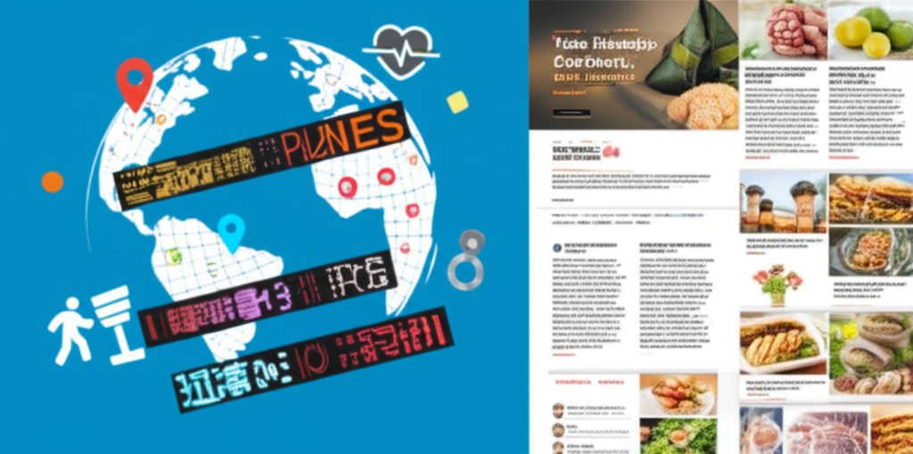

# 近期健康與時事新聞綜覽
## 引言
近期新聞涵蓋了政治、健康和節慶飲食等多個方面。從台海局勢、國際關係，到台灣民眾的健康問題、端午節粽子的飲食建議，反映了人們對自身健康、國際局勢以及傳統文化的關注。本文將針對以上新聞進行簡單歸納與分析。
## 主體內容
### 第一點：國際局勢與台灣
新聞中提及了台海局勢日益緊張，以及關島在潛在衝突中的關鍵作用。美國官員訪問關島也引發了關注。另一方面，中國外交部長王毅呼籲非洲各國反對強權政治，也顯示出國際間的權力角力。這些都反映了當前複雜的地緣政治格局。
### 第二點：台灣民眾的健康問題
多則新聞聚焦台灣民眾的健康議題。腦中風、高血壓、心血管疾病等問題頻繁出現。新聞強調了飲食和生活方式在預防這些疾病中的重要性，例如控制三高（高血壓、高血糖、高血脂）和選擇健康的飲食。端午節臨近，粽子這種傳統食物的健康食用方式也成為關注焦點。
### 第三點：端午節飲食與健康
端午節的粽子雖然美味，但也潛藏著健康風險。營養師建議，食用粽子時要注意熱量、油脂和鈉的攝取，特別是對於高血壓、高血糖、高血脂患者。同時，新聞也提到了高鉀食物與降血壓的關聯，以及飲食處理上的關鍵細節。
## 結論
總體而言，近期新聞涵蓋了政治、健康和文化等多個層面。國際局勢的緊張與台灣的地位持續受到關注，民眾的健康問題也日益凸顯，健康飲食和生活習慣的重要性被反覆強調。端午節作為重要的傳統節日，其飲食文化也與健康議題緊密相連。